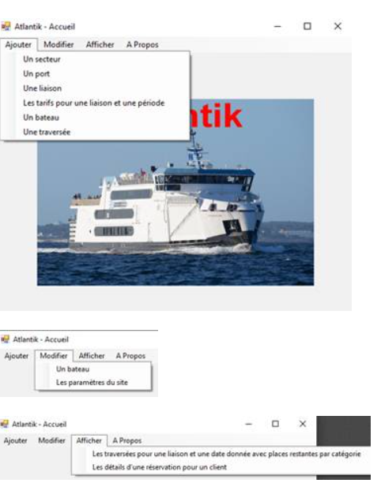
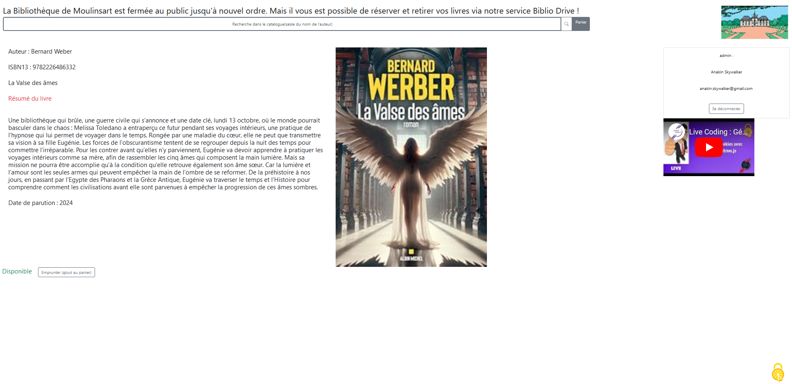
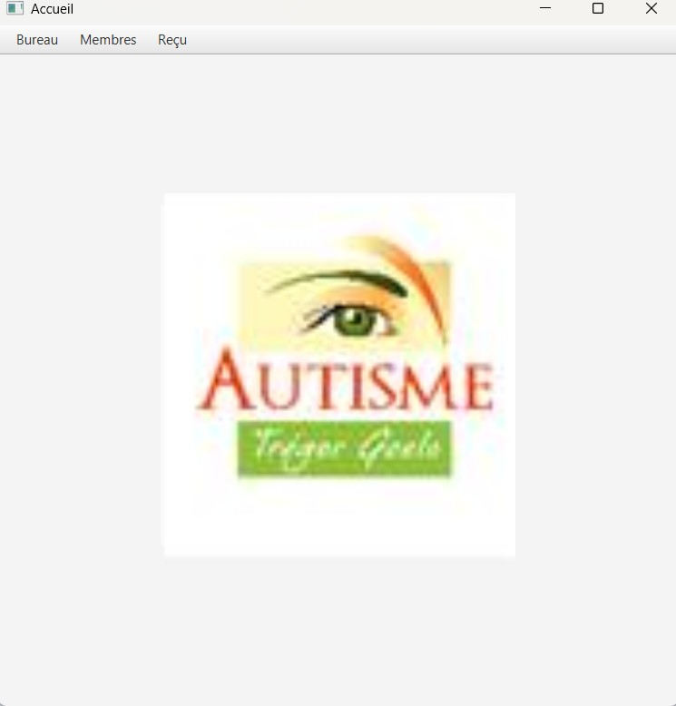
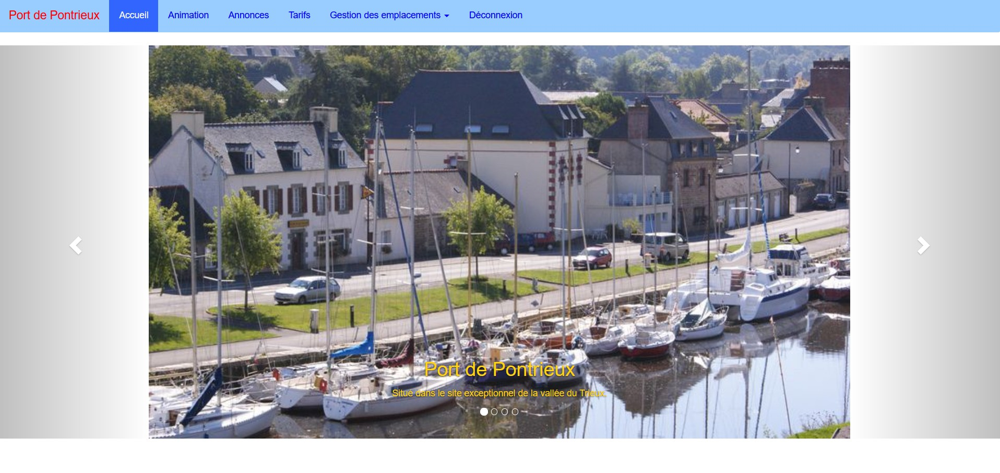
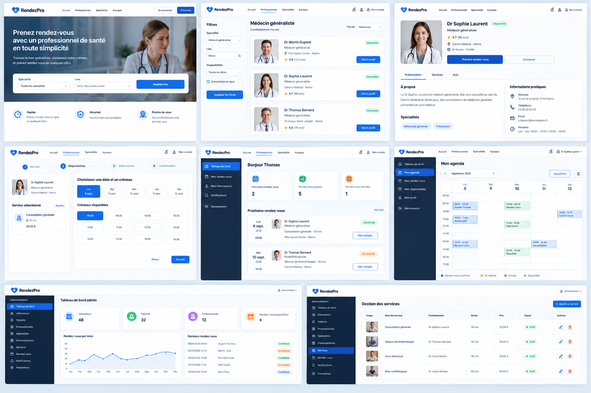

Développeur full stack, de l’interface à la base de données.
Je suis actuellement étudiant en Licence Professionnelle CRRW (Conception, Rédaction et Réalisation Web), parcours Intégration et Web Design.
Voir mon portfolioÀ propos
Passionné par le développement web et les nouvelles technologies, je suis actuellement étudiant en Licence Professionnelle CRRW (Conception, Rédaction et Réalisation Web), parcours Intégration et Web Design. Mon parcours académique, notamment mon BTS Services Informatiques aux Organisations (SIO), option SLAM, m'a permis d'acquérir de solides bases en programmation, en développement d'applications et en gestion de bases de données. Au fil de mes projets et de mes expériences, j'ai développé des compétences en HTML, CSS, JavaScript, PHP, Java, Python et SQL, ainsi qu'une expérience dans l'utilisation de frameworks et d'outils de développement tels qu'Angular et Symfony. Je m'intéresse particulièrement à la conception d'interfaces web modernes, intuitives et responsives, tout en accordant une attention particulière à l'expérience utilisateur (UX) et à l'identité visuelle (UI). Curieux, rigoureux et motivé, j'aime apprendre, relever de nouveaux défis techniques et transformer des idées en solutions numériques concrètes. Mon objectif professionnel : évoluer vers le métier de développeur Full Stack et participer à la conception et à la réalisation de projets web innovants.
Portfolio


Application Atlantik
Page d'accueil


Application Bibliodrive
Page d'accueil


Application Autisme
Page d'accueil


Application Port de Pontrieux
Page d'accueil

Application Salle de Gym
Page d'accueil


Application Pôle de Santé
Vitrine
Certifications


Compétences
Formations
-
Licence pro CRRW (Conception Rédaction et Réalisation Web) Parcours Intégration et Web Design
Une phrase sur le contenu de la formation.
-
Classe préparatoire ATS (Adaptation Technicien Supérieur)
Une phrase sur le contenu de la formation.
-
BTS SIO (Services Informatique aux Organisations) option SLAM (Solution Logiciels Applications et Métiers)
-
BUT Réseaux & Télécoms
-
Bac STI2D (Sciences Technologies Industriells et Développement Durable) option EE (Energies environnementales)
Expériences
-
Réalisation d'une FAQ
Projet R&D Web/App : application FAQ centralisant les réponses aux questions récurrentes pour faire gagner du temps aux utilisateurs.
- Récupération de données de services externes via SOAP
- Interface en Angular Material, back-end en Python, état géré par les services Angular
- Connexion front/back par appels HTTP ; tests d'intégration et tests utilisateurs auprès d'un groupe pilote
-
Automatisation et tests de non-régression sur IHM
Automatisation de tests web (télécommunications) : installation automatisée d'OS et de logiciels pour exécuter des tests.
- Environnement de test sur Windows 10 (Python, Robot Framework, RIDE, Node.js, Java)
- Tests de non-régression automatisés sur 3 IHM web : configurateur, Omnidispatch, supervision (radio PTT)